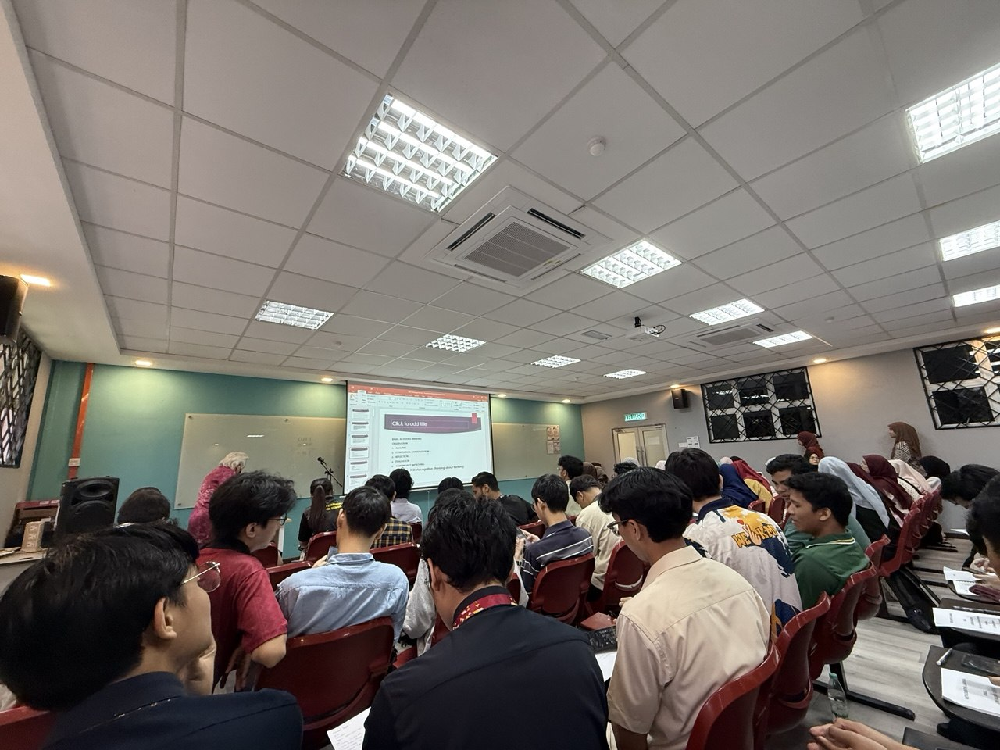
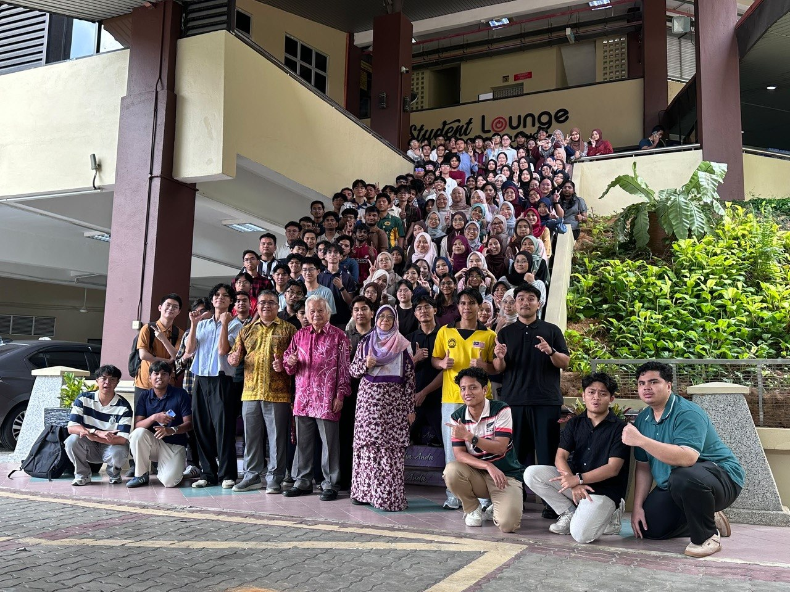

01
Industry Talk: Metacognitive Learning
I participated in an Industry Talk delivered by Dr Zahari Othman from the Centre for Teaching Thinking and Innovation (CenT-TI), at Universiti Teknologi Malaysia, Skudai, Johor.
Speaker
Dr Zahari Othman
Organisation
Centre for Teaching Thinking and Innovation (CenT-TI)
Location
UTM Skudai, Johor
Main Topics
HOTS, Cognition, Metacognition and Creative Thinking
Key Topics
- Higher-Order Thinking Skills (HOTS)
- Cognition and metacognition
- Creative thinking and problem-solving
Event Photos

